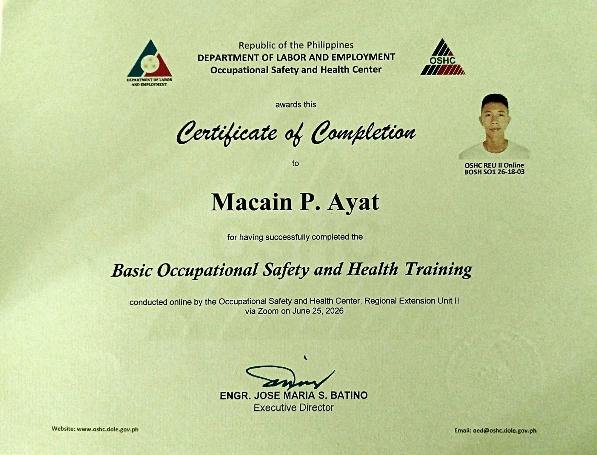
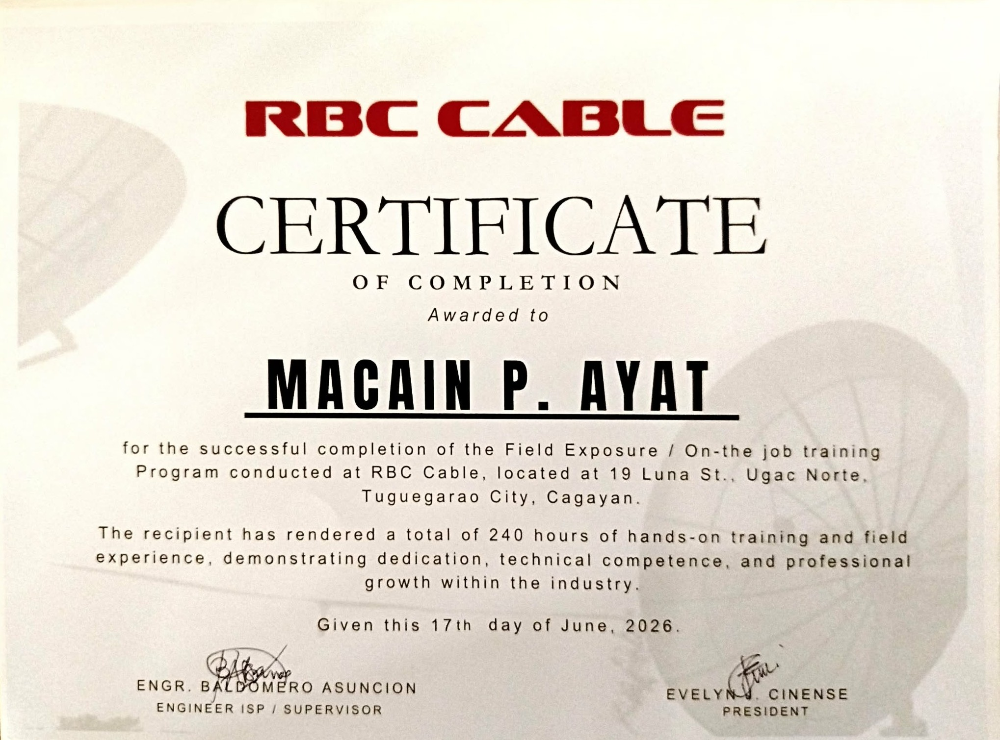

01</>
HTML
Building clear, well-structured web page content.
FOUNDATIONSPERSONAL PORTFOLIO
Hello, I'm
Curious about technology, passionate about learning, and committed to making progress one step at a time.
01 / ABOUT
Every experience is an opportunity to learn something new and become better than yesterday.
I am a Computer Engineering student at Cagayan State University – Carig Campus, located in Tuguegarao City, Cagayan.
I am interested in technology, computers, and understanding how different systems work. I enjoy exploring new ideas, learning through academic activities, and gaining practical experience.
I value continuous learning, creativity, and problem-solving. My goal is to keep building my knowledge and apply what I learn in meaningful ways.
02 / SKILLS
A growing toolkit built through practice, curiosity, and consistency.
Building clear, well-structured web page content.
FOUNDATIONSCreating layouts and styling pages with colors, spacing, and responsive design.
FOUNDATIONSA next step in learning how to make websites interactive.
CURRENT GOALLearning to organize, track, and share coding projects.
PRACTICE✦ This section reflects my current learning journey and will grow as I gain more experience.
03 / CREDENTIALS
Certificates and training that form part of my learning journey.

CERTIFICATE
June 25, 2026

TRAINING / EXPERIENCE
June 17, 2026
04 / CONTACT
Thank you for visiting my portfolio. For questions, feedback, or professional connections, feel free to send me an email.